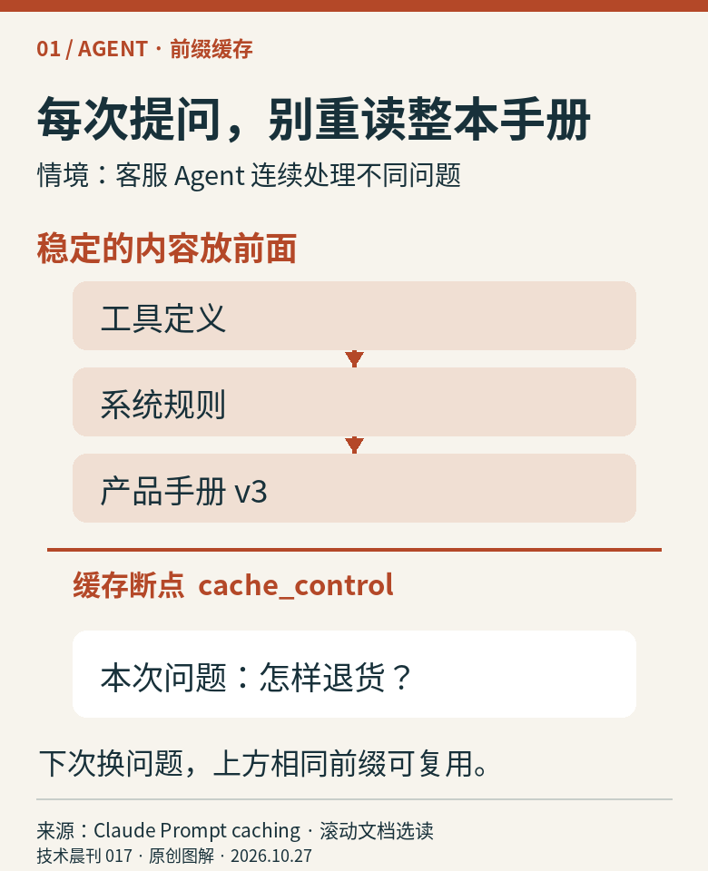
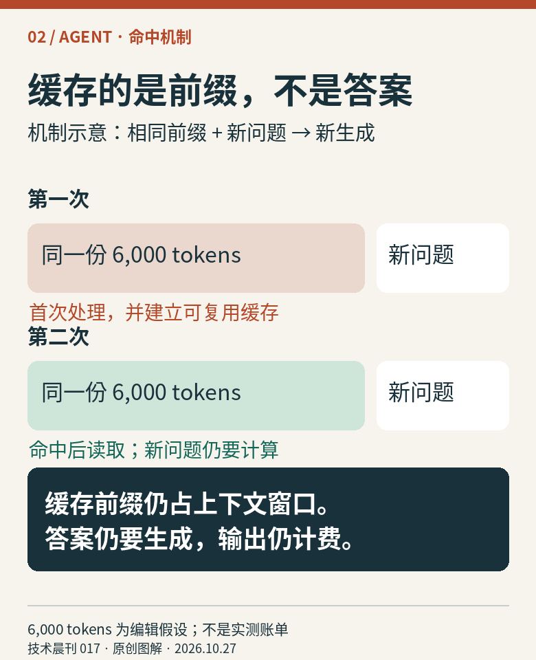
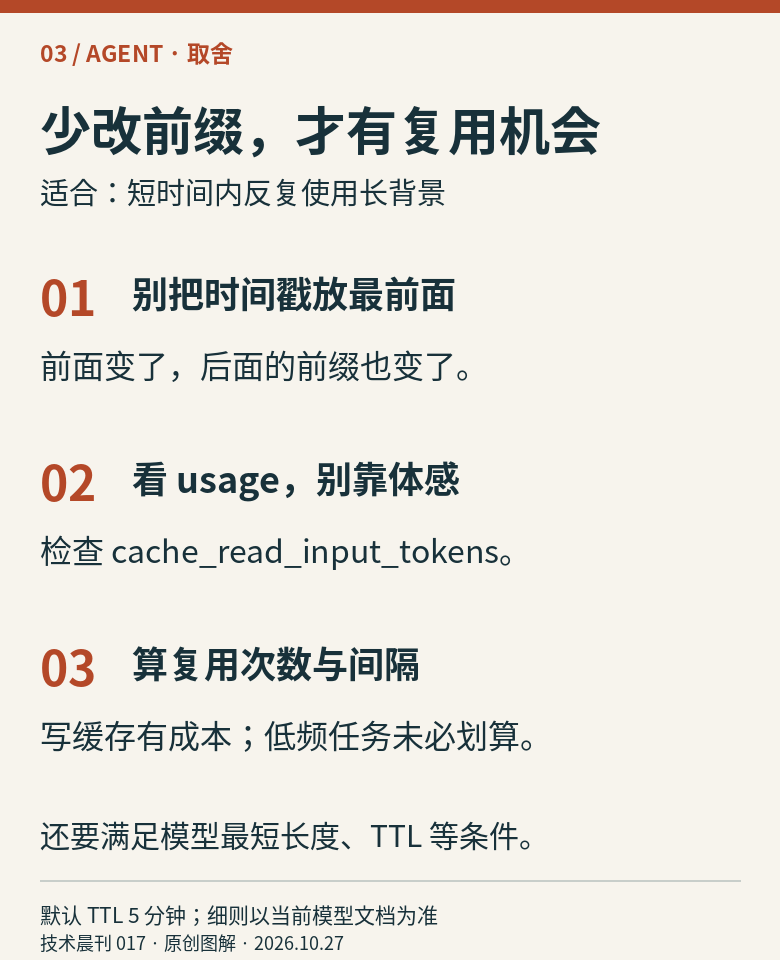
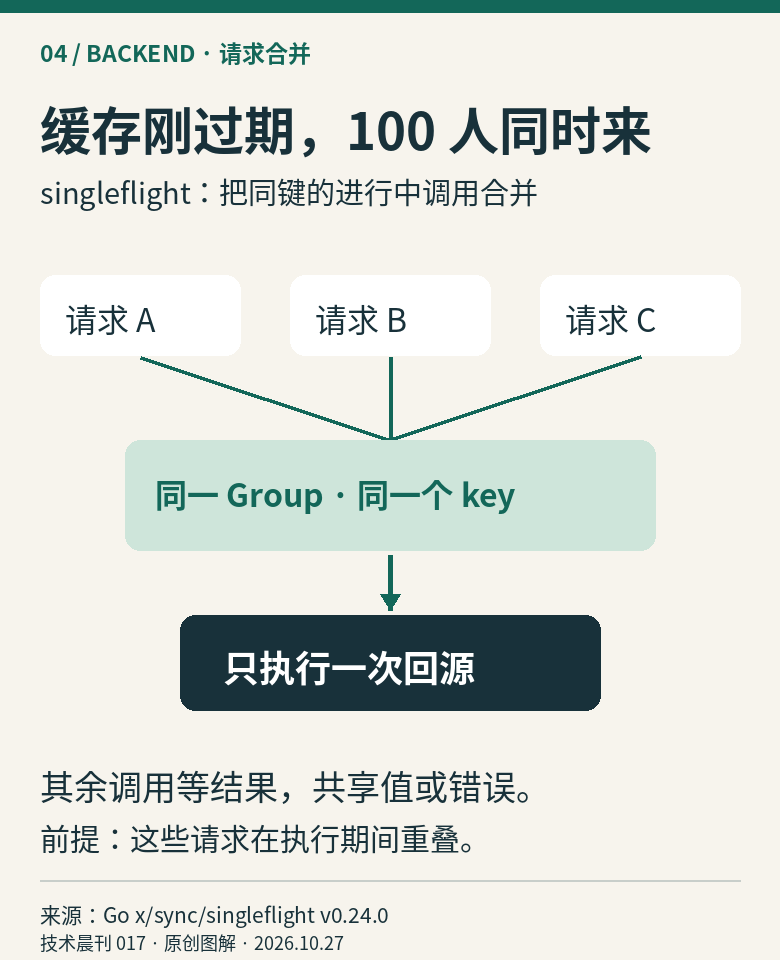
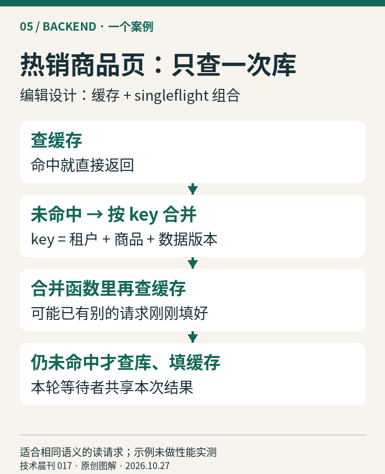
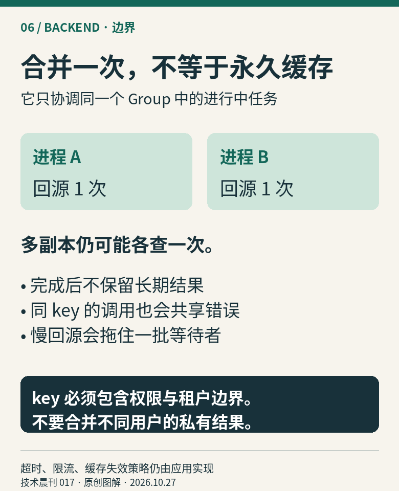
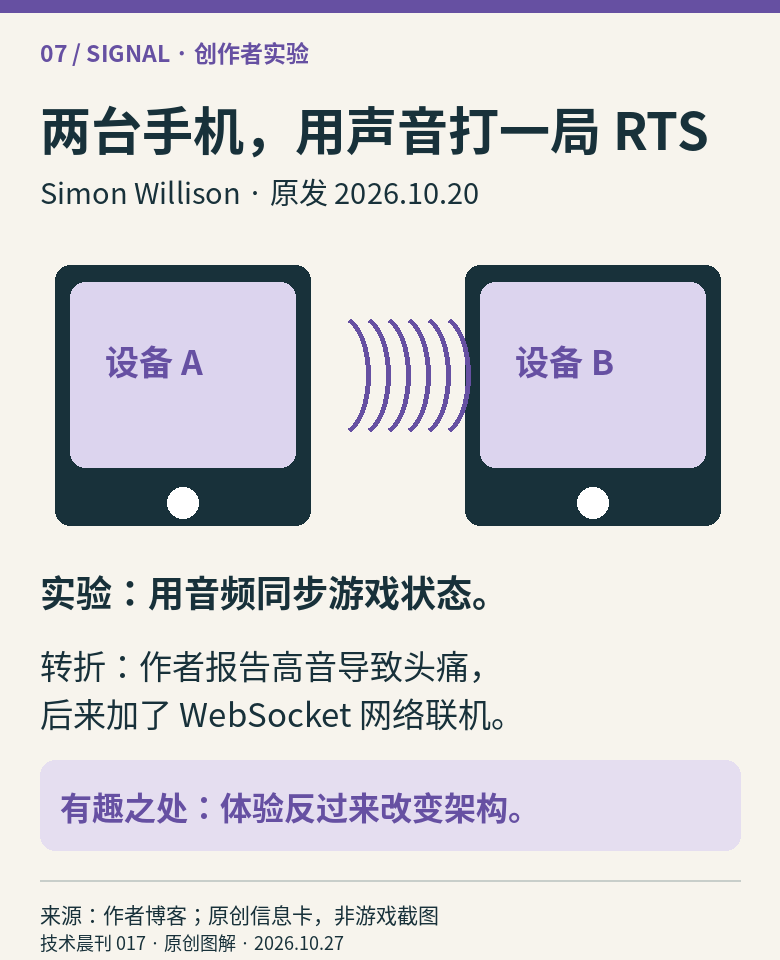

01 / AGENT · 文档选读
同一本手册，
每次都要重读吗？
客服 Agent 每轮都带着产品规则。把稳定背景组织成可复用前缀，省下重复处理。

图 1 · 客服 Agent 的提示结构示例。缓存断点位于稳定内容块末尾。
图 2 · 6,000 tokens 是编辑假设，用来说明复用对象，不是实测节省率。
图 3 · 短时间内重复长背景更适合缓存。频繁改工具或背景会降低复用。短摘要与实现边界
Claude 的提示缓存复用相同前缀的计算表示；示例将手册内容块标记为 cache_control: {"type":"ephemeral"}，用户问题放在之后。前缀顺序为 tools → system → messages；改变前面的内容会影响后续匹配。它不会替你缓存最终回答或减少上下文占用。
默认有效期 5 分钟；命中会刷新，从发起写入或读取的请求开始计时。模型有最短缓存长度；首次响应开始后缓存才可供其他请求使用。检查 usage 中的 cache_creation_input_tokens 与 cache_read_input_tokens。低频访问可能只付出写入成本；本文不承诺固定节省比例，未调用付费 API 实测。
相关阅读：第014期：按需检索上下文。先决定哪些信息值得带入，再优化重复计算。
02 / BACKEND · 机制选读
缓存一过期，
别一起冲向数据库。
热销商品页的一百个读请求，恰好撞上缓存失效。singleflight 让相同的进行中查询只由一个调用执行。

图 4 · 100 人是情境假设，图中取三个代表。仅合并执行时间重叠的调用。
图 5 · 商品读取的编辑设计。私有定价还需纳入用户或权限范围，先鉴权再合并。
图 6 · 合并范围是 Group；这不是分布式锁，也不提供持久缓存或恰好一次写入。短摘要与实现边界
Go 的 singleflight.Group.Do(key, fn) 让同一 Group、同一 key 的重叠调用共享 fn 的结果或错误。Group 应在服务内复用，不能每个 HTTP 请求新建。它不是结果缓存；任务结束后，下一轮调用仍可能执行 fn。
图5是应用设计：先鉴权、查缓存，未命中才进入合并函数；函数内再次查缓存，仍没有才回源。key 必须完整表达结果语义，包括租户、权限与版本。设置有上限的回源超时，别让第一个客户端断连随意取消所有等待者的共享工作。不同副本并不会自动协调；海量不同 key 也不会合并，仍需限流。代价是等待同一个慢查询、共享同一个失败；不适合拿来保证支付等写操作不重复。
相关阅读：第016期：并发任务领取。那篇分配不同任务；本篇合并相同读取。
03 / SIGNAL · 本周创作者实验
不开服务器，
让手机“叫”着联机。
Django 联合创造者 Simon Willison 做了个浏览器 RTS：Battle Drones。最出人意料的功能，是用声音连接附近设备。

图 7 · 根据作者博客原创整理；非 X 或游戏截图。原文含后续更正，已一并纳入。作者说，音频联机源自他不想长期维护服务器的愿望。但真实玩家被高音弄得头痛，他随后加了网络联机。原文里的“只是一款低风险小游戏”，也因此被自己的体验推翻。
编辑看点：值得看的不只是 AI 写出游戏，而是一个具体限制怎样改变方案。想体验可先用单人模式或网络联机；本刊未进行多人实测，也不把作者的“好玩”评价当作性能结论。
打开 Battle Drones ↗ · 看作者的迭代过程与后续更正 ↗
来源坐标
① Claude Platform · Prompt caching：滚动文档，未单列原发日期；本期选读显式断点与前缀复用机制，不是今日新功能公告。
② Go x/sync v0.24.0 · singleflight：版本页标注发布于 2026-09-23；本文锁定该版文档语义，不声称为最新版本。
③ Battle Drones：作者本人完整原文：原发 2026-10-20，包含后来新增的网络联机说明，更新段未单列日期。作者自述页确认其身份并链接 @simonw。X 候选线索原链接：正文读取受限，未用搜索摘要作为事实依据，也未制作仿截图。
以上资料均于 2026-10-27（UTC+8）核验。全部配图为本刊确定性排版原创，无外部图片转载；图解中的客服、商品与请求数量为编辑示例，未做独立基准测试。